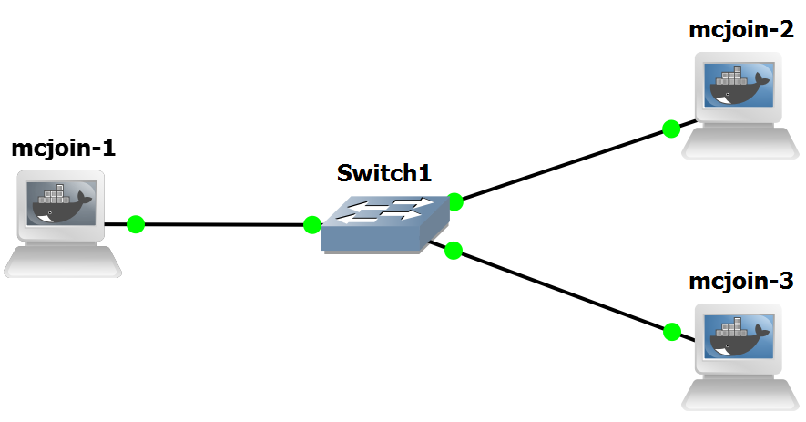
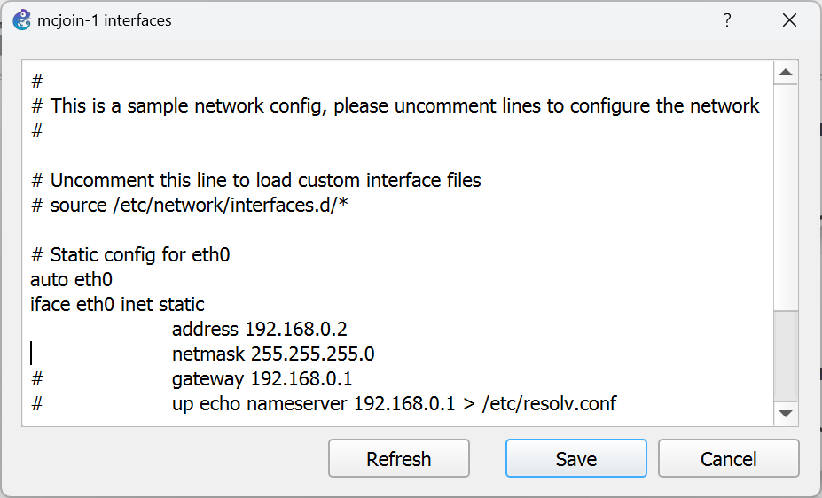
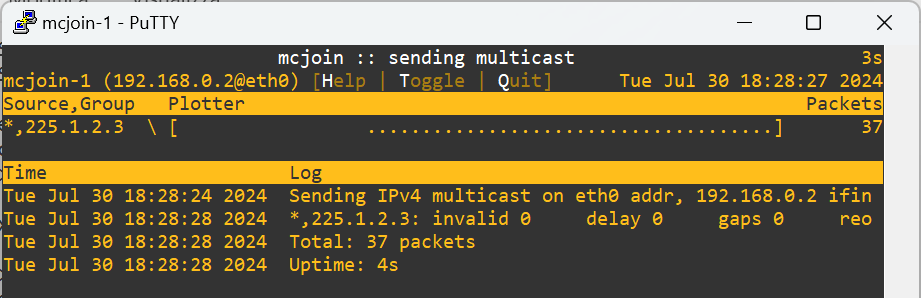
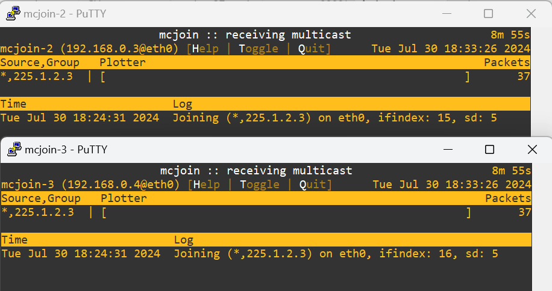
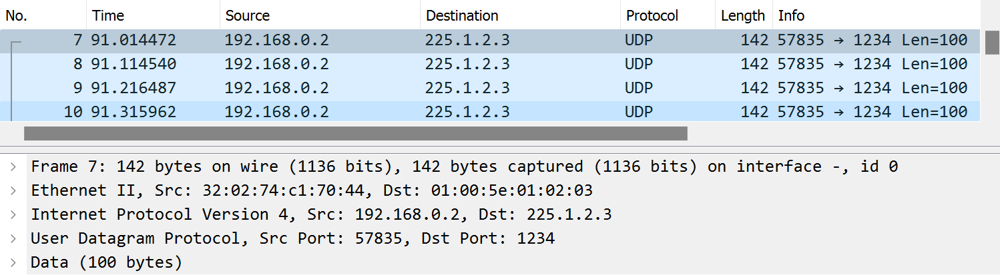

The purpose of this lab is to show how multicast IP works in a LAN context based on a switch device.
# mcjoin -s <IPv4_or_IPv6_group_address>Notice that if you try to send multicast IP packets from a container whose eth0 interface has not been configured with an IP address, you will get the following error message:
Interface eth0 has no IPv4 address yet.To verify routing of multicast, make sure to add the -t TTL option to the sender since the default TTL is 1 and every router decrements the TTL.
# mcjoin -h
Usage: mcjoin [-dhjosv] [-c COUNT] [-f MSEC] [-i IFACE] [-l LEVEL]
[-p PORT] [-t TTL] [-w SEC]
[[SOURCE,]GROUP0 .. [SOURCE,]GROUPN | [SOURCE,]GROUP+NUM]
Options:
-b BYTES Payload in bytes over IP/UDP header (42 bytes), default: 100
-c COUNT Stop sending/receiving after COUNT number of packets
-d Run as daemon in background, output except progress to syslog
-f MSEC Frequency, poll/send every MSEC milliseconds, default: 100
-h This help text
-i IFACE Interface to use for sending/receiving multicast, default: eth0
-j Join groups, default unless acting as sender
-l LEVEL Set log level; none, notice*, debug
-o Old (plain/ordinary) output, no fancy progress bars
-p PORT UDP port number to listen to, default: 1234
-s Act as sender, sends packets to select groups
-t TTL TTL to use when sending multicast packets, default 1
-v Display program version
-w SEC Initial wait before opening sockets
-W SEC Timeout, in seconds, before mcjoin exits
Bug report address : https://github.com/troglobit/mcjoin/issues
Project homepage : https://github.com/troglobit/mcjoin/


ping 192.168.0.3to verify that mcjoin-1 can exchange packets with mcjoin-2
ping 192.168.0.4to verify that mcjoin-1 can exchange packets with mcjoin-3
mcjoin -s 225.1.2.3to verify that mcjoin-2 and mcjoin-3 can receive packets sent to that group by mcjoin-1; stop packet transmission after a few seconds by pressing ctrl-c at the command line.

Showing that mcjoin sent 37 multicast IP packets to group 225.1.2.3 before ctrl-c was pressed.

Showing that 37 multicast IP packets sent to group 225.1.2.3 were received by mcjoin-2 and mcjoin-3.

Wireshark shows a sequence of UDP packets sent by 192.168.0.2 (mcjoin-1) to the multicast IP group 225.1.2.3.
Notice that the MAC destination address for the Ethernet frames carrying the multicast IP packets sent to 225.1.2.3 is 01:00:5e:01:02:03.
This address is computed according to what is described in
RFC-1112 (Section 6.4):.
An IP host group address is mapped to an Ethernet multicast address by placing the low-order 23-bits of the IP address into the low-order 23 bits of the Ethernet multicast address 01-00-5E-00-00-00 (hex). Because there are 28 significant bits in an IP host group address, more than one host group address may map to the same Ethernet multicast address.An IGMP snooping switch does not generate or respond to any multicast messages; instead it passively snoops on IGMP query, report, and leave (IGMP version 2) messages transferred between IP multicast routers/switches and IP multicast hosts to determine the multicast group membership.
Copyright (c) 2024 - Roberto Canonico
Last updated: 24/09/2024 by Roberto Canonico